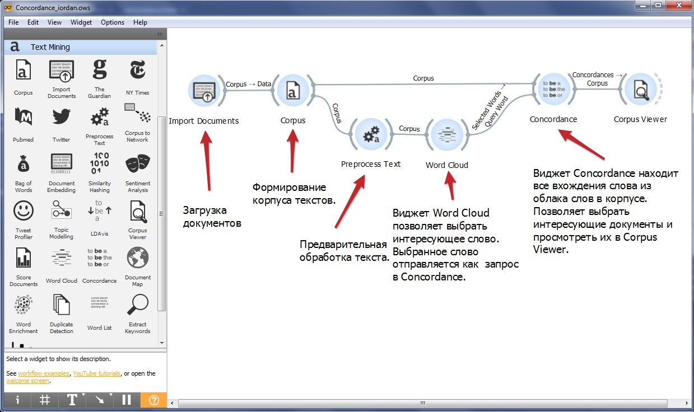

Конкорданс произведения «О происхождении и деяниях гетов» Иордана: опыт создания с использованием Orange 3
А.В.Кузнецов
Orange 3
Orange 3 – это бесплатный инструмент с открытым исходным кодом для интеллектуального анализа данных, визуализации и построения моделей машинного обучения. Orange разработан в лаборатории биоинформатики на факультете компьютерных и информационных наук Университета Любляны. Работа с Orange производится на основе графического интерфейса и не предполагает написание кода. В ходе анализа данных пользователь выстраивает так называемый рабочий процесс – workflow – путём манипуляций с иконками – виджетами, которые мышкой выкладываются на рабочий стол приложения. Каждый виджет представляет собой программный блок, который каким-либо образом обрабатывает поступившую на его вход информацию и передаёт её дальше для обработки, визуализации или сохранения следующим виджетом. Orange можно свободно скачать с сайта проекта [https://orangedatamining.com/]. Также он входит в состав платформы для анализа данных Anaconda [https://www.anaconda.com/].
Главное окно программы с рабочим процессом создания конкорданса

Файлы проекта
Все материалы проекта доступны в архиве.